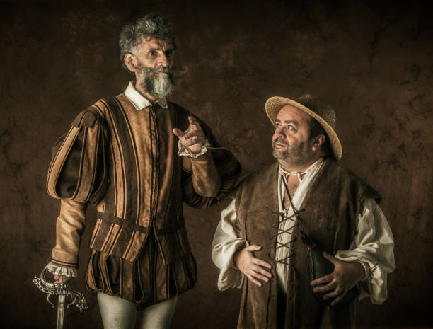
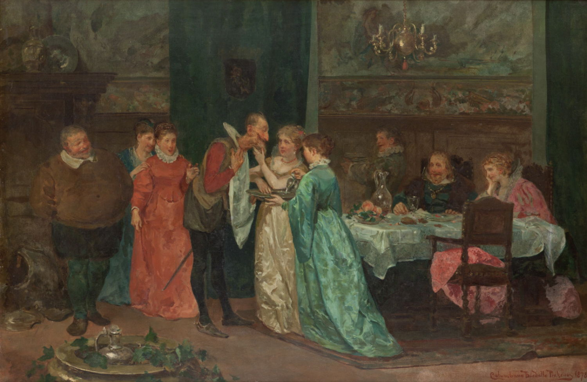

Two journeys, one feverish imagination, and a world forever changed by a would-be knight-errant who refuses to see the world as it is.

The knight-errant rides out with Rocinante and his imagined lady, Dulcinea, in mind.
Don Quixote is a middle-aged gentleman from the region of La Mancha in central Spain. Obsessed with the chivalrous ideals touted in books he has read, he decides to take up his lance and sword to defend the helpless and destroy the wicked. After a first failed adventure, he sets out on a second one with a somewhat befuddled laborer named Sancho Panza, whom he has persuaded to accompany him as his faithful squire. In return for Sancho’s services, Don Quixote promises to make Sancho the wealthy governor of an isle. On his horse, Rocinante, a barn nag well past his prime, Don Quixote rides the roads of Spain in search of glory and grand adventure. He gives up food, shelter, and comfort, all in the name of a peasant woman, Dulcinea del Toboso, whom he envisions as a princess.
On his second expedition, Don Quixote becomes more of a bandit than a savior, stealing from and hurting baffled and justifiably angry citizens while acting out against what he perceives as threats to his knighthood or to the world. Don Quixote abandons a boy, leaving him in the hands of an evil farmer simply because the farmer swears an oath that he will not harm the boy. He steals a barber’s basin that he believes to be the mythic Mambrino’s helmet, and he becomes convinced of the healing powers of the Balsam of Fierbras, an elixir that makes him so ill that, by comparison, he later feels healed. Sancho stands by Don Quixote, often bearing the brunt of the punishments that arise from Don Quixote’s behavior.
The story of Don Quixote’s deeds includes the stories of those he meets on his journey. Don Quixote witnesses the funeral of a student who dies as a result of his love for a disdainful lady turned shepherdess. He frees a wicked and devious galley slave, Gines de Pasamonte, and unwittingly reunites two bereaved couples, Cardenio and Lucinda, and Ferdinand and Dorothea. Torn apart by Ferdinand’s treachery, the four lovers finally come together at an inn where Don Quixote sleeps, dreaming that he is battling a giant. Along the way, the simple Sancho plays the straight man to Don Quixote, trying his best to correct his master’s outlandish fantasies. Two of Don Quixote’s friends, the priest and the barber, come to drag him home. Believing that he is under the force of an enchantment, he accompanies them, thus ending his second expedition and the First Part of the novel.

In Part II, fame precedes the knight, and nobles turn his delusion into entertainment.
The Second Part of the novel begins with a passionate invective against a phony sequel of Don Quixote that was published in the interim between Cervantes’s two parts. Everywhere Don Quixote goes, his reputation—gleaned by others from both the real and the false versions of the story—precedes him. As the two embark on their journey, Sancho lies to Don Quixote, telling him that an evil enchanter has transformed Dulcinea into a peasant girl. Undoing this enchantment, in which even Sancho comes to believe, becomes Don Quixote’s chief goal. Don Quixote meets a Duke and Duchess who conspire to play tricks on him. They make a servant dress up as Merlin, for example, and tell Don Quixote that Dulcinea’s enchantment—which they know to be a hoax—can be undone only if Sancho whips himself 3,300 times on his naked backside. Under the watch of the Duke and Duchess, Don Quixote and Sancho undertake several adventures. They set out on a flying wooden horse, hoping to slay a giant who has turned a princess and her lover into metal figurines and bearded the princess’s female servants.
During his stay with the Duke, Sancho becomes governor of a fictitious isle. He rules for ten days until he is wounded in an onslaught the Duke and Duchess sponsor for their entertainment. Sancho reasons that it is better to be a happy laborer than a miserable governor. A young maid at the Duchess’s home falls in love with Don Quixote, but he remains a staunch worshipper of Dulcinea. Their never-consummated affair amuses the court to no end. Finally, Don Quixote sets out again on his journey, but his demise comes quickly. Shortly after his arrival in Barcelona, the Knight of the White Moon—actually an old friend in disguise—vanquishes him.
Cervantes relates the story of Don Quixote as a history, which he claims he has translated from a manuscript written by a Moor named Cide Hamete Benengeli. Cervantes becomes a party to his own fiction, even allowing Sancho and Don Quixote to modify their own histories and comment negatively upon the false history published in their names. In the end, the beaten and battered Don Quixote forswears all the chivalric truths he followed so fervently and dies from a fever. With his death, knights-errant become extinct. Benengeli returns at the end of the novel to tell us that illustrating the demise of chivalry was his main purpose in writing the history of Don Quixote.